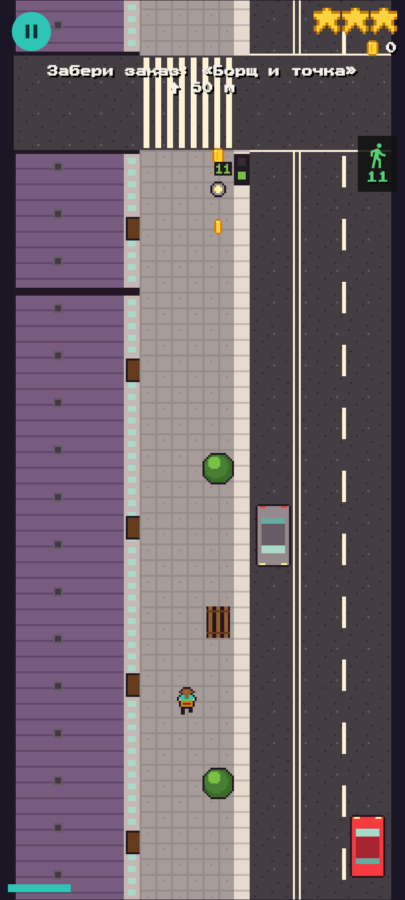

Курьер Раш
Еда остывает — беги!
Ты курьер доставки еды. Забери заказ в ресторане и успей к клиенту, пока пицца горячая, а суп не расплескался. Уворачивайся от прохожих, жди зелёный или рискни перебежать на красный, запрыгни в автобус или на самокат — и получи свои чаевые.

- Настоящая Москва: спальные районы, Тверская, Арбат без машин, Москва-Сити и парк у реки.
- Доставка на время: бургеры, пицца, суши, шаурма, пельмени, кофе и суп, который так легко расплескать.
- Правила дороги: светофоры, переходы, машины, которые не хотят уступать, и ГАИ.
- Лови транспорт: самокат, велосипед, автобус и такси.
- Прохожие: бабушки с тележками, собачники с длинными поводками, туристы и промоутеры.
- Три курьера: Паша, Света и Александр — у каждого своя история.
- Играй без интернета: в метро, в очереди, где угодно.
Скачать
Скоро в RuStore и Huawei AppGallery.